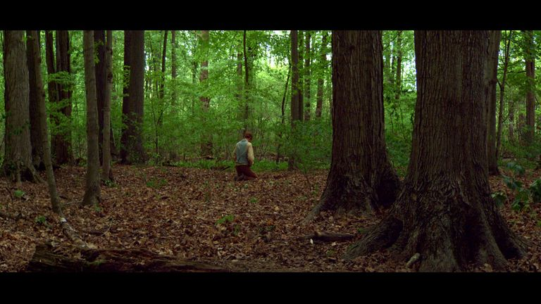

Church video
Ask of God: Joseph Smith’s First Vision
Compare this Church History Museum film with the linked First Vision accounts. Notice which questions the records can answer.
The Church of Jesus Christ of Latter-day Saints
Answer Library
Joseph Smith (1805-1844) was the founding prophet of The Church of Jesus Christ of Latter-day Saints. Latter-day Saints believe God called him to help restore the gospel and Church of Jesus Christ in the latter days.
Watch and study
The Church History Museum film Ask of God provides a visual introduction to Joseph Smith's reported First Vision. Watch with a source question in mind: what can you identify in the written accounts, and what belongs to a filmmaker's portrayal?
The Church's First Vision Accounts essay identifies four firsthand accounts. Its discussion of the 1832 account emphasizes Joseph's concern for forgiveness and personal redemption. The 1838 account places the vision within the beginnings of the Church and emphasizes his question about which church to join.
These are different dates of recording, not four dates for the event. Begin with one account, noting its audience and emphasis. Then compare a second. The essay presents the Church's explanation of differences and links to documents so that you can examine more than a modern summary.

Church video
Compare this Church History Museum film with the linked First Vision accounts. Notice which questions the records can answer.
The Church of Jesus Christ of Latter-day Saints
Joseph Smith grew up during intense religious revival in the northeastern United States. As a teenager, he sought divine guidance about which church to join. He later recorded that in answer to prayer he saw God the Father and Jesus Christ. Latter-day Saints call this experience the First Vision and regard it as the beginning of the Restoration.
Joseph said an angel named Moroni later directed him to an ancient record written on metal plates. He translated the record by the gift and power of God, and it was published in 1830 as the Book of Mormon. The book presents itself as another testament of Jesus Christ.
Latter-day Saints believe priesthood authority, gospel ordinances, prophetic revelation, and the organization of Christ’s Church were restored through Joseph Smith. The Church was formally organized in 1830. Joseph served as its first president and received revelations that now form a substantial portion of the Doctrine and Covenants.
Latter-day Saints honor Joseph as a prophet, but worship God the Father in the name of Jesus Christ. Joseph’s prophetic role is meaningful to believers because they understand his mission as pointing people to Jesus Christ, restoring priesthood authority, and bringing forth scripture that testifies of Christ.
Joseph Smith’s life included religious leadership, migration, conflict, legal controversy, political activity, plural marriage, and violence directed both toward and around the early Saints. A responsible study should not reduce him to either a flawless hero or a caricature. The Church’s history resources include primary-source context and essays for difficult questions as well as devotional accounts.
You can examine one question at a time. Begin with the linked accounts, notice when and why each was written, and distinguish what the record says from later interpretation. If you are discussing the question with someone else, make room for what it means to them as well as the evidence. You do not need to rush past a concern to keep learning.
The Church's First Vision Accounts essay discusses differences among the accounts and explains the Church's interpretation of them. Its notes provide a path to the underlying records. Read an account before its commentary when you can, and distinguish Joseph's reported experience from a historian's explanation of the record.
A devotional account and a historical essay may serve different purposes. Asking when a text was written, who preserved it, and what evidence is available is a reasonable part of study. You can hold a specific question open while examining it carefully.
Joseph Smith History 1:5-20 recounts religious disagreement, Joseph's reading and prayer, and his reported vision. Record the questions he describes and the response he says he received. This is the scriptural account accepted by Latter-day Saints; identifying it as an account is important when studying history.
Use the First Vision Accounts essay linked above to reach the other records. Compare emphasis, wording, audience, and date of recording. The date an event is said to have occurred and the date a surviving account was written are different facts. The essay offers the Church's interpretation of differences; the underlying documents allow you to examine the evidence yourself.
A historical investigation can ask what records survive and how they relate. A spiritual inquiry may ask what the Restoration claim means for belief and practice. Those inquiries can inform each other, but one should not silently stand in for the other. If a concern remains, name it specifically and pursue the relevant evidence.
Write the title, author or recorder, date of the record, and exact passage you are considering. Add a separate sentence for your interpretation. This keeps a later retelling from becoming indistinguishable from the original evidence.
Watch and study
Days of Harmony turns attention to the work surrounding the Book of Mormon. Read the heading to Doctrine and Covenants 6 before watching. It identifies Harmony, Pennsylvania, April 1829, and Oliver Cowdery's work as a scribe beginning April 7.
Verses 18-20 combine support with accountability. Oliver is asked to stand by Joseph in difficulty, and the two are to give and receive correction. Patience, faith, hope, and charity belong within that relationship. This is a useful passage to keep beside a history of religious leadership because the text itself makes room for faults and growth.
In verses 21-23 the speaker identifies Himself as Jesus Christ and recalls peace given to Oliver. In verses 36-37 attention turns again to Christ and His wounds. Consider how the revelation directs a participant in the Restoration toward the Savior. Continue that connection in the full D&C 6:36 study.

Church video
Watch Oliver Cowdery’s experience as a scribe, then return to the questions and reassurance in Doctrine and Covenants 6.
The Church of Jesus Christ of Latter-day Saints
These focusChrist prompts are invitations for personal reflection.
Choose a single question about Joseph's life. Write it in language that a source could help answer: what did he report, when was it recorded, or how did a particular teaching develop? Avoid making one question stand for his entire life.
Open a document linked from the First Vision essay. Read the surrounding passage. Note the recorder, recording date, and what the document actually says. If your question concerns a different period, use the Church History section to find the relevant sources.
Write a short account of what you learned, separating evidence from your explanation of it. Name any remaining uncertainty. A source can establish what a witness reported without resolving every question about the experience being described.
Read D&C 6 with the historical questions still clearly named. What does its invitation to seek wisdom, accept correction, and look to Christ mean for your own conduct? Personal reflection can accompany careful investigation without replacing it.
Bring a passage and a specific question to Ask, then check the response against the linked original sources.
Compare accounts and source types in the wider Church History section.
Examine its teachings while distinguishing textual, historical, and spiritual questions.